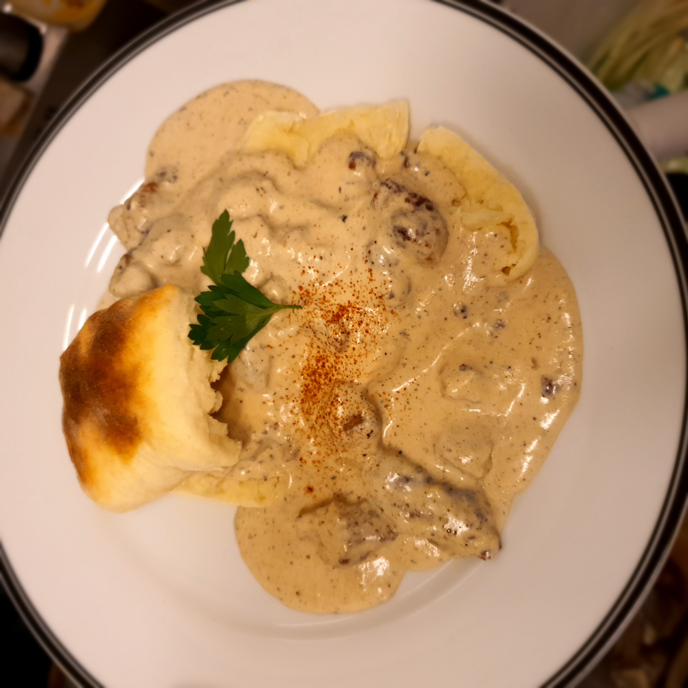

Biscuits and Gravy

Delicious and easy American comfort food!
If you've never had authentic biscuits and gravy, boy are you in for a treat.
My father would frequently make this dish for special breakfasts on the weekend,
and as an adult I truly appreciate their simplicity, tradition, and deliciousness.
Normally made with buttermilk biscuits, this specific version
calls for a cream-based biscuit, which in my opinion suits this
dish a lot better. Whilst buttermilk biscuits maybe exhibit superior
flavor when eaten on their own with butter, jam, or honey,
if we are going to drown the biscuits in scrumptious, sausagy gravy anyways,
then the cream versions will hold up just fine!
Ingredients
For the biscuits:
- 150g AP flour *
- 150g heavy cream
- 5g baking powder
- 3g kosher salt
* Note -
You may need additional flour
depending on your conditions, and also for rolling the biscuits out.
For the gravy:
- 200g heavy cream
- appr 150g milk on standby
- 1 package breakfast sausages
- 1-2 tbsp butter (depending on fat
content of butter)
- 1-2 tbsp AP flour
- kosher salt to taste
- generous freshly ground black pepper
- generous freshly ground white pepper
- paprika (normal or smoked okay)
Steps
For the biscuits:
- Preheat oven to 200 Celsius.
- Mix the flour, baking powder, and salt together.
- Add the cream a bit at a time, mixing
thoroughly with your hands.
- Mix thoroughly until dough comes together. If dough is too sticky,
please add small amounts of flour until it holds together.
- Fold dough into itself two or three times, then press or roll out dough to a thickness of 2.5 cm
- Cut dough with spatula or pastry cutter into 3 even pieces.
- Place in preheated oven, and bake about 8-10 minutes, or until tops are well browned.
For the gravy:
- Place a skillet (not non-stick) on med-high heat, and add sausages when the pan is hot.
- Using the back of a wooden spoon, crumble and smash the sausage as much as possible.
- After the sausage is well browned, turn heat to medium and add butter if there is not much fat in the pan.
- Once butter is melted, add the flour and begin to stir it in. Cook the flour for a minute or two, until the rawness is cooked out.
- Add the cream and continue to stir.
- Add a bit of milk and bring the heat back to high.
- As the gravy comes to a boil and reduces, back the heat off to maintain a small simmer.
- Add seasonings now, continuing to taste for more as necessary.
- Add more milk if gravy thickens too much. Once the gravy is a little bit looser than your desired consitency, turn off the heat, as it will thicken slightly while sitting.
To finish:
- Split open a fresh biscuit and place on a plate.
- Spoon generous amount of sausage and gravy on top of the biscuit, so that it runs over the sides.
- Garnish with extra paprika, pepper, and/or green of choice (green onion, parsley, thyme, etc).
- Enjoy!